2025 / 2026
Prinz Sebastian I. & Prinz Tim I.
Mit Pagin Silvana Fuschetto, Pagin Nicole Wienköp und Prinzenführer Luc Eben.
Der Carnevals-Ausschuss Wesel e.V. verbindet die Weseler Karnevalsvereine, begleitet das Prinzenpaar der Stadt und steht für Tradition, Gemeinschaft und die Freude am närrischen Brauchtum.
Diese Seite wächst Schritt für Schritt zu unserem neuen digitalen Zuhause.
Mit Pagin Silvana Fuschetto, Pagin Nicole Wienköp und Prinzenführer Luc Eben.
Mit Pagin Eva Tenbergen, Page Oliver Heselmann und Prinzenführer Luc Eben.
Mit Pagin Nina und Pagin Elia.
Elia I. wird am 14. November 2026 als Kinderprinzessin der Stadt Wesel für die Session 2026/27 proklamiert.
Sie möchten unser designiertes Prinzenpaar in der Session 2026/27 zu Ihrer Veranstaltung einladen? Bitte richten Sie Termin- und Einladungsanfragen zentral an die Geschäftsführung des CAW.
geschaeftsfuehrer.caw@gmail.comDer Carnevals-Ausschuss Wesel e.V. ist der Dachverband der Weseler Karnevalsgesellschaften. Heute gehören dem CAW 12 Mitgliedsgesellschaften an.
Im Mittelpunkt stehen die Weseler Tollitäten. Der CAW begleitet das Prinzenpaar der Stadt Wesel, organisiert dessen öffentliche Vorstellung und Proklamation und trägt Verantwortung für zentrale Veranstaltungen des Weseler Karnevals. Eine weitere große Aufgabe ist die Organisation des Rosenmontagszuges.
Der Carnevals-Ausschuss Wesel e.V. ist Mitglied im karnevalistischen Landesverband Rechter Niederrhein e.V. (LRN) und im Bund Deutscher Karneval e.V. (BDK).
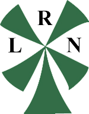
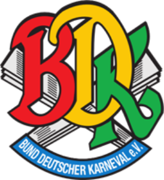
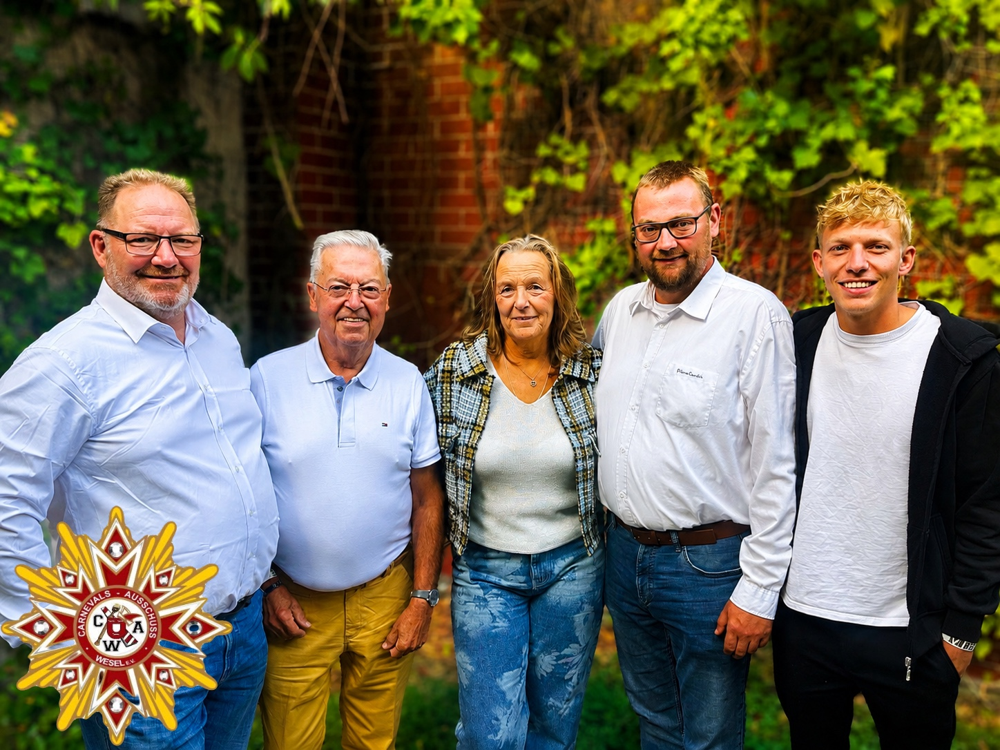
Ein besonderer Auftakt für unseren neu gewählten Vorstand: Gemeinsam besuchten wir das Sommerfest unseres befreundeten Karnevalsvereins Elf vom Dörp aus Düsseldorf. Ein schöner Tag mit guten Gesprächen, karnevalistischer Freundschaft und vielen gemeinsamen Momenten.
Karneval verbindet – auch über die Stadtgrenzen hinaus.
Mehr Aktuelles auf FacebookProklamation der designierten Kinderprinzessin Elia I. für die Session 2026/27.
Einlass 10:00 Uhr · Beginn 11:11 UhrProklamation der Weseler Tollitäten für die Session 2026/27.
Treffen der Tollitäten aus der Region.
Der Vorstand koordiniert gemeinsam mit den Mitgliedsgesellschaften das gesamtstädtische Karnevalsgeschehen in Wesel.
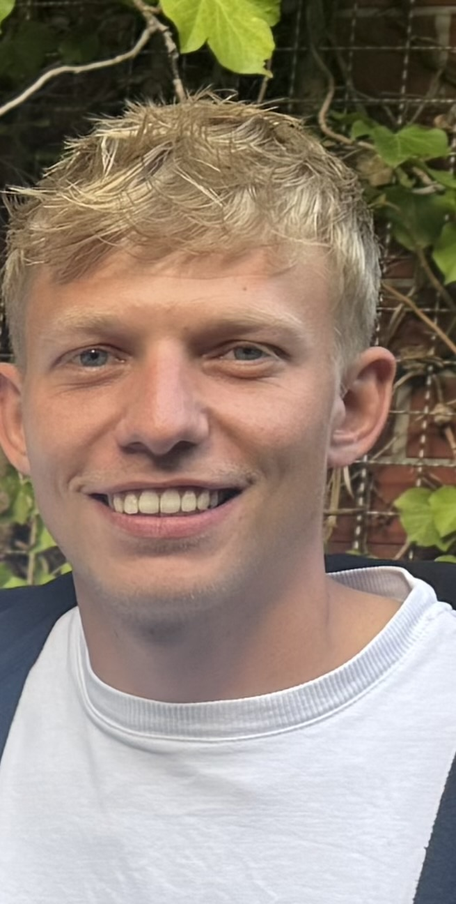
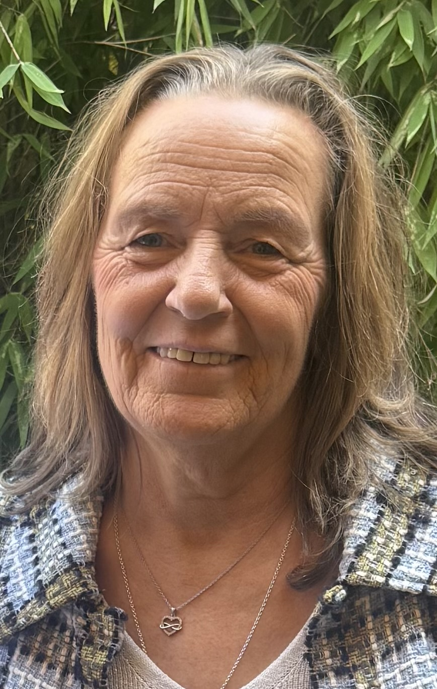

Die Position ist derzeit nicht besetzt.
Die Position ist derzeit nicht besetzt.
Zwölf Gesellschaften bilden gemeinsam den Carnevals-Ausschuss Wesel e.V. Zehn der Gesellschaften präsentieren wir hier mit ihrem Vereinslogo; bei Gesellschaften ohne eigenes Logo verwenden wir bewusst eine neutrale CAW-Darstellung.
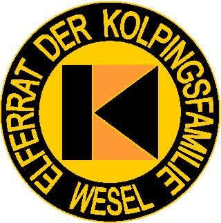
Ansprechpartnerin: Kristin Lohmann
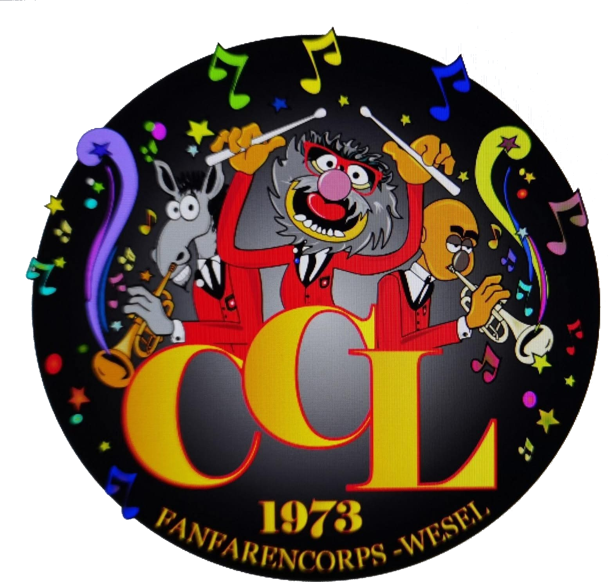
Ansprechpartner: Thomas Neuköther
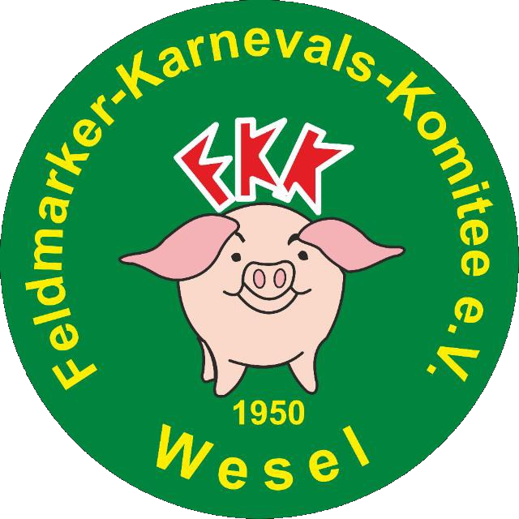
Ansprechpartner: Sebastian Bassanese
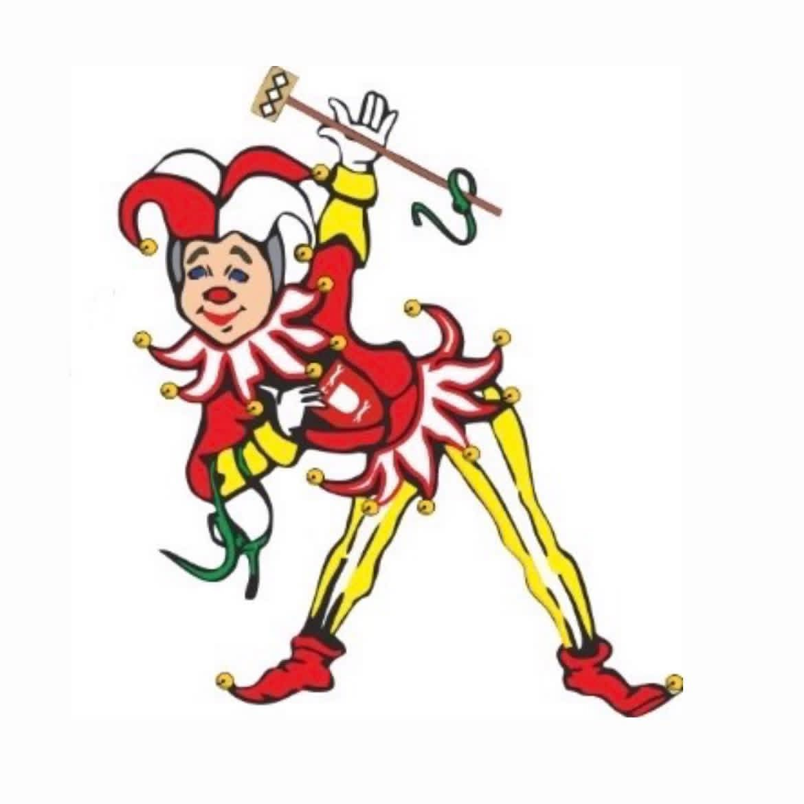
Ansprechpartner: Andreas von Brackel
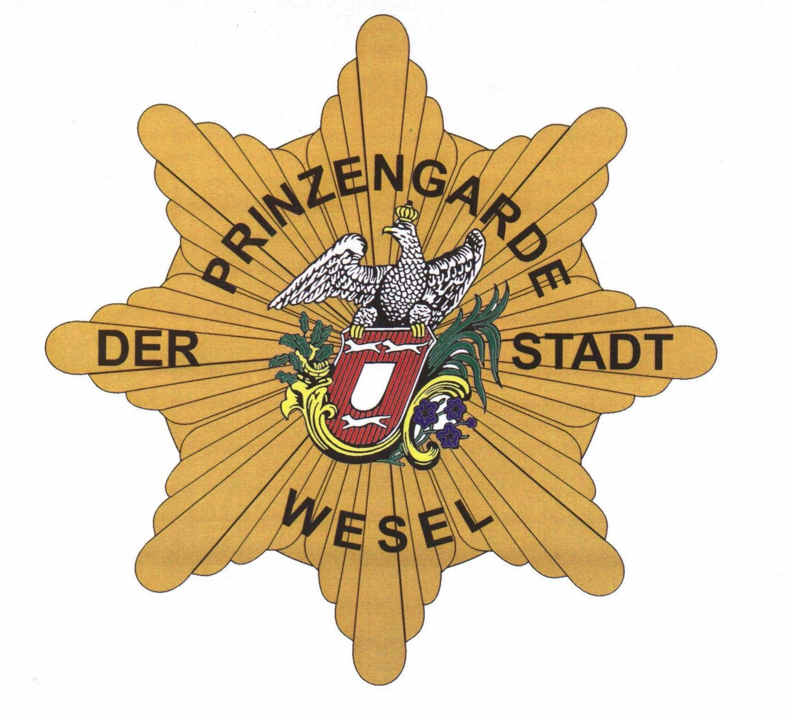
Ansprechpartner: Dirk Knopf
Ansprechpartnerin: Pia Lohmann
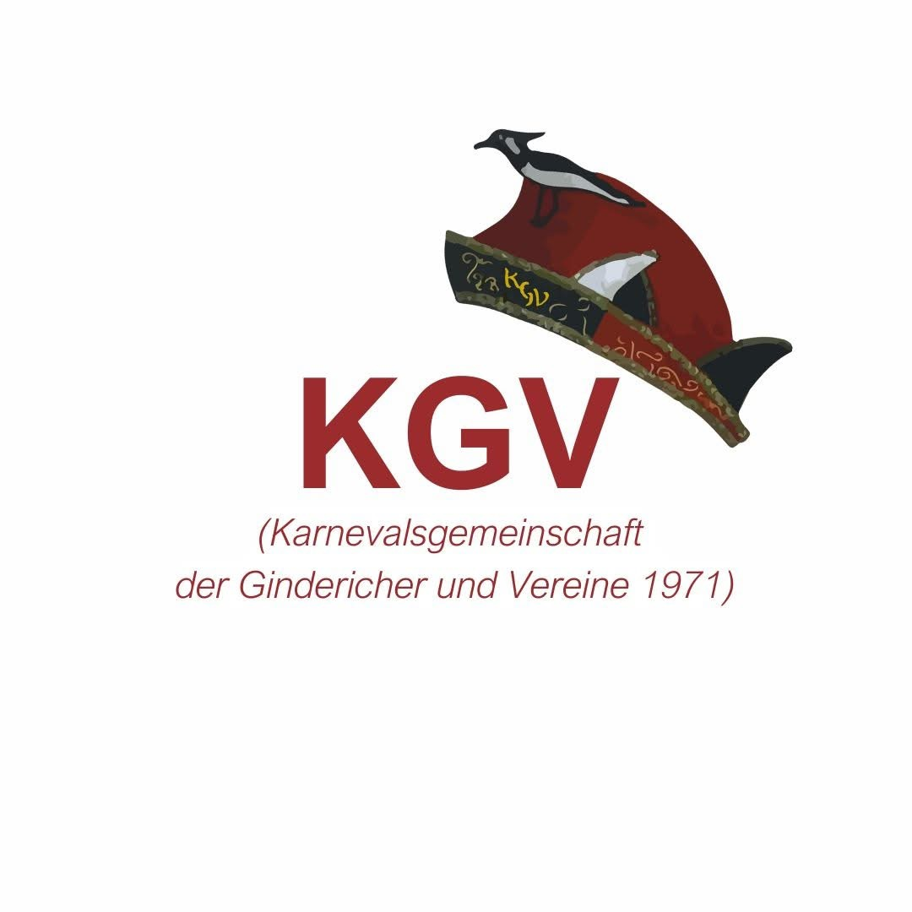
Ansprechpartner: Ralph Dahmen
Ansprechpartnerin: Ulla Hornemann
Kein eigenes Logo hinterlegtAnsprechpartnerin: Ingrid Laader
Kein eigenes Logo hinterlegt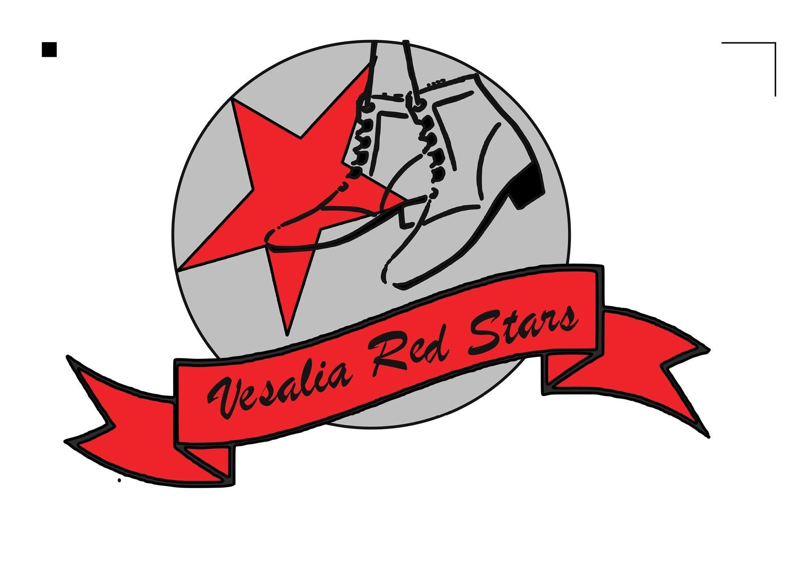
Ansprechpartnerin: Anne Holtkamp
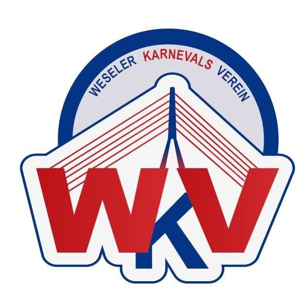
Ansprechpartner: Alexander Berge
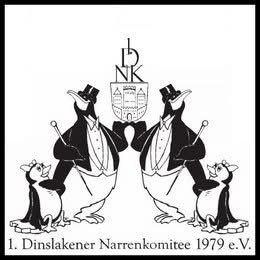
Ansprechpartner: Jörg Köster
Thomas Holtkamp
Robert Terhorst
Matthias Schlug †
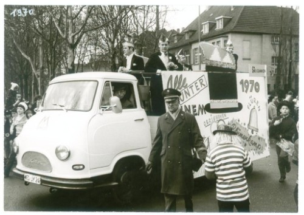
Der Weseler Rosenmontagszug existiert seit 1966. Was mit kleinen Wagen und wenigen Fußgruppen begann, entwickelte sich zu einem festen Bestandteil des Weseler Karnevals.
Der Carnevals-Ausschuss Wesel wurde 1967 als Dachorganisation der Weseler Karnevalsvereine ins Leben gerufen. 1970 organisierte der CAW erstmals den Rosenmontagszug.
Archivmaterial des ersten CAW-Präsidenten Paul ThielenJecken der Kolpingsfamilie und der Elferrat der Bürgerschützen ziehen gemeinsam durch Wesel. Aus kleinen Wagen und wenigen Fußgruppen entwickelt sich eine feste Weseler Tradition.
Die Weseler Karnevalsvereine schließen sich in einer Dachorganisation zusammen, um den gesamtstädtischen Karneval gemeinsam zu gestalten.
Zum ersten Mal wird der Rosenmontagszug federführend durch den Carnevals-Ausschuss Wesel organisiert.
Der CAW vereint 12 Gesellschaften und begleitet die großen und kleinen Tollitäten der Stadt.
Am 16. Februar 2026 zieht der närrische Lindwurm durch Wesel. Für teilnehmende Vereine, Gruppen, Fahrzeuge und Wagenengel stellen wir hier die wichtigsten Informationen und Unterlagen gebündelt bereit.
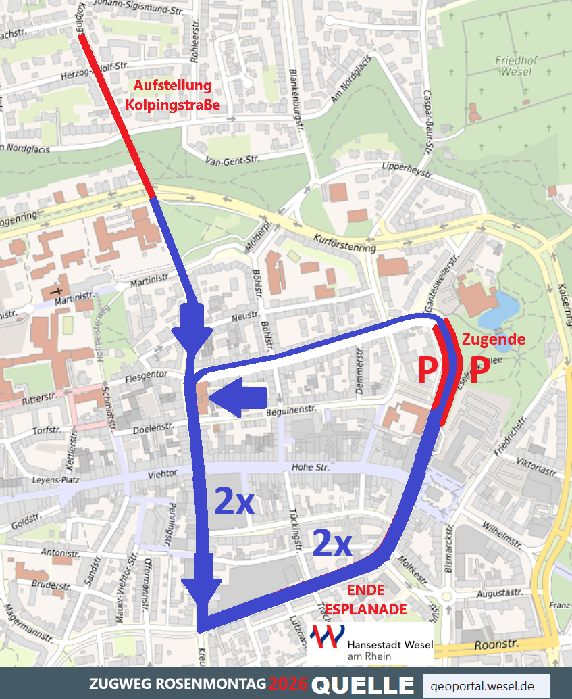
Aufstellung an der Kolpingstraße, Zugweg durch die Weseler Innenstadt und Zugende im Bereich Esplanade.
Zugweg herunterladenDann bewerben Sie sich beim CAW als zukünftiger Weseler Prinz oder zukünftige Weseler Prinzessin.
Die Bewerbung erfolgt schriftlich. Bewerbungsschluss ist jeweils der Aschermittwoch. Eine Mitgliedschaft in einer der CAW-Karnevalsgesellschaften ist dafür nicht erforderlich.
Ab dem 1. November des jeweiligen Vorjahres sollten Sie viel Zeit und Begeisterung mitbringen: In einer Session repräsentiert das Prinzenpaar die Stadt Wesel bei rund 150 Terminen. Pünktlichkeit und Verlässlichkeit spielen dabei eine große Rolle.
Auch nach der eigentlichen Session stehen beispielsweise Sommerfeste befreundeter Vereine auf dem Programm.
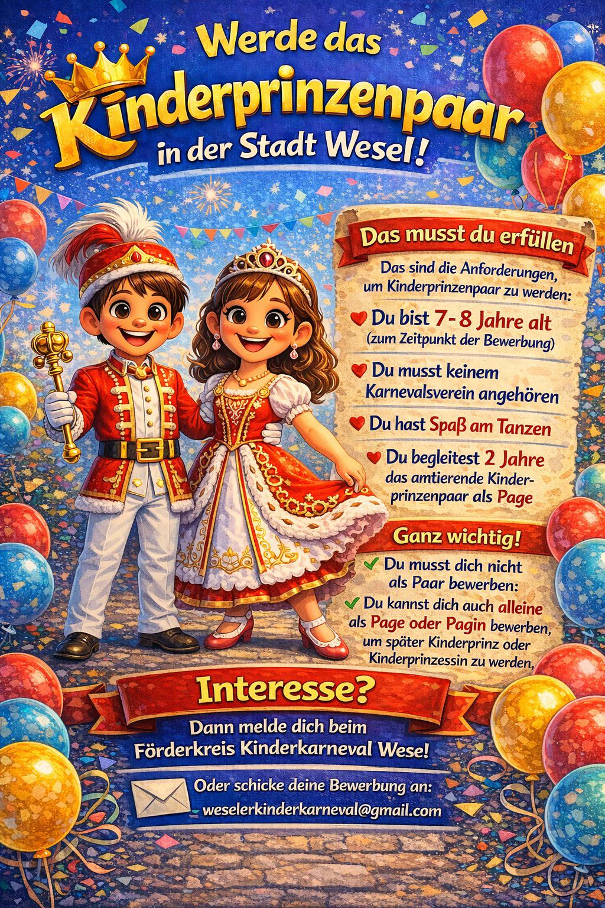
Du möchtest einmal als Kinderprinz oder Kinderprinzessin die Stadt Wesel im Karneval vertreten?
7–8 Jahre alt zum Zeitpunkt der Bewerbung
Du musst keinem Karnevalsverein angehören.
Du solltest Spaß am Tanzen haben.
Vorher begleitest du zwei Jahre das amtierende Kinderprinzenpaar als Page oder Pagin.
Kontakt: weselerkinderkarneval@gmail.com
Die Satzung regelt Zweck, Mitgliedschaft, Vereinsorgane und die Arbeit des Carnevals-Ausschuss Wesel. Der aktuelle veröffentlichte Stand ist vom 8. Oktober 2015.
Zu den zentralen Aufgaben gehören die Pflege des rheinischen Brauchtums in Wesel, die Vorbereitung des gesamtstädtischen Karnevalsgeschehens, die Auswahl und Proklamation des Prinzenpaares sowie die Organisation des Rosenmontagszuges.
Hier finden Vereine, Zugteilnehmer und Interessierte die aktuell vorliegenden Unterlagen direkt zum Herunterladen.
Das Sessionsheft der vergangenen Session steht hier als PDF zur Verfügung.
Sessionsheft herunterladenAnmeldung zur Teilnahme am Rosenmontagsumzug am 16.02.2026.
PDF herunterladenExcel herunterladenVerbindliche Bedingungen zu Anmeldung, Fahrzeugen, Ordnungsdiensten und Wurfmaterial.
HerunterladenTreffpunkt, Aufgaben, Sicherheit und Ablauf für Wagenengel.
HerunterladenMuster für die Begutachtung von Fahrzeugen bei Brauchtumsveranstaltungen.
HerunterladenTechnische und betriebliche Hinweise für Fahrzeuge und Fahrzeugkombinationen.
HerunterladenÜbersichtskarte mit Aufstellung, Zugweg und Zugende.
Grafik herunterladenFür nicht dem CAW angeschlossene Gruppen beträgt der Kostenbeitrag laut Teilnahmebedingungen 125 € je Fahrzeug und 75 € je Fußgruppe. Brauchtumsfahrzeuge ohne amtliche Zulassung, auf denen Personen mitfahren, benötigen ein Gutachten einer anerkannten Überwachungsorganisation wie TÜV oder DEKRA.
Neuigkeiten und Rückblicke aus dem CAW und der laufenden Session.
Zu den Neuigkeiten →Die Sessionshefte des CAW zum Lesen und Herunterladen.
Sessionshefte öffnen →Formulare und wichtige Unterlagen für Vereine und Zugteilnehmer.
Zum Downloadcenter →Wer Wesel als Tollität repräsentieren möchte, kann sich beim CAW bewerben.
Mehr erfahren →
Prinz Sebastian I. & Prinz Tim I. haben gemeinsam mit Pagin Silvana Fuschetto, Pagin Nicole Wienköp und Prinzenführer Luc Eben eine ganz besondere Session erlebt. Entdeckt Bilder, Erinnerungen und das Aftermovie dieser närrischen Zeit.
Rückblick Session 2025/26 ansehen →Ohne starke Partner wäre der Weseler Karneval in dieser Form nicht möglich. Der CAW bedankt sich herzlich für die finanzielle, materielle, organisatorische und ideelle Unterstützung.
Wir freuen uns, wenn Sie unsere Partner bei Ihren zukünftigen Kauf- und Auftragsentscheidungen berücksichtigen.
Carnevals-Ausschuss Wesel e.V.
Jens Tenbergen
Wallstraße 10
46483 Wesel
Telefon: 0178 3027608
E-Mail: praesident@caw-wesel.de
Lukas Berge
Weimarerstraße 22
46483 Wesel
E-Mail: geschaeftsfuehrer.caw@gmail.com
Die Inhalte dieser Internetseite werden mit größtmöglicher Sorgfalt erstellt und gepflegt. Eine Gewähr für die Richtigkeit, Vollständigkeit und Aktualität der bereitgestellten Informationen kann jedoch nicht übernommen werden. Verpflichtungen zur Entfernung oder Sperrung der Nutzung von Informationen nach den allgemeinen Gesetzen bleiben hiervon unberührt.
Diese Internetseite enthält Links zu externen Internetseiten Dritter. Auf deren Inhalte hat der Carnevals-Ausschuss Wesel e.V. keinen Einfluss. Für die Inhalte der verlinkten Seiten ist stets der jeweilige Anbieter oder Betreiber verantwortlich. Sollten uns Rechtsverletzungen auf verlinkten Seiten bekannt werden, werden entsprechende Links geprüft und gegebenenfalls entfernt.
Die auf dieser Internetseite veröffentlichten Inhalte, Fotografien, Grafiken und sonstigen Werke unterliegen – soweit anwendbar – dem deutschen Urheberrecht. Rechte Dritter sowie die Rechte an verwendeten Marken, Vereins- und Unternehmenslogos bleiben unberührt. Eine Vervielfältigung, Bearbeitung oder anderweitige Verwendung außerhalb der gesetzlichen Schranken bedarf der Zustimmung des jeweiligen Rechteinhabers.
Der Schutz personenbezogener Daten ist uns wichtig. Diese Datenschutzhinweise müssen vor der Veröffentlichung der Internetseite an den tatsächlich eingesetzten Webhoster und an alle verwendeten externen Dienste angepasst werden.
Die derzeitige lokale Version der CAW-Webseite verwendet kein Analyse- oder Tracking-System und setzt selbst keine Marketing-Cookies. Externe Internetseiten werden über normale Links geöffnet und nicht automatisch in die Seite eingebettet.
Beim späteren Betrieb über einen Webserver können technisch erforderliche Zugriffsdaten durch den Hostinganbieter verarbeitet werden. Welche Daten dabei konkret verarbeitet und wie lange sie gespeichert werden, richtet sich nach dem später ausgewählten Hostinganbieter. Diese Angaben werden vor der Veröffentlichung hier ergänzt.
Wenn Sie den CAW per E-Mail oder Telefon kontaktieren, werden die von Ihnen übermittelten Angaben zur Bearbeitung Ihrer Anfrage verwendet. Die Daten werden nicht ohne Rechtsgrundlage oder Ihre Einwilligung zu anderen Zwecken weitergegeben.
Auf der Webseite können Links zu Mitgliedsgesellschaften, Sponsoren und weiteren externen Angeboten vorhanden sein. Erst wenn Sie einen solchen Link aufrufen, verlassen Sie die CAW-Webseite. Für die Datenverarbeitung auf der anschließend aufgerufenen Internetseite ist deren jeweiliger Betreiber verantwortlich.
{kind=link}